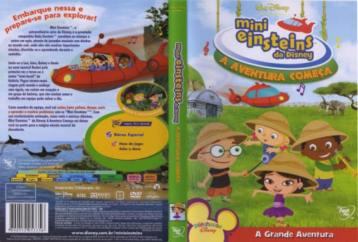

Outro Título:Little Einsteins: The Adventure Begins
País:United States, 72 minutos
Idiomas falados:Espanhol, Inglês, Português
Gênero(s):Animação, Família
Diretor(s):Andy Thom, Olexa Hewryk
Escritor(es):Jeff Borkin, Brian L. Perkins, Jill Cozza-Turner, Eric Weiner, Abby Pecoriello
Codec:MPEG-2 (DVD)
Número: 5818


Certificado:L
Sinopse:
Quatro pequenos gênios em idade pré-escolar adoram aprender sobre natureza, cultura e arte.
Elenco:

Tipo de mídia: DVD5,
Legendas: Espanhol, Inglês, Português, Sem Legendas
Alugado: Não
Tela: Anamorphic Widescreen